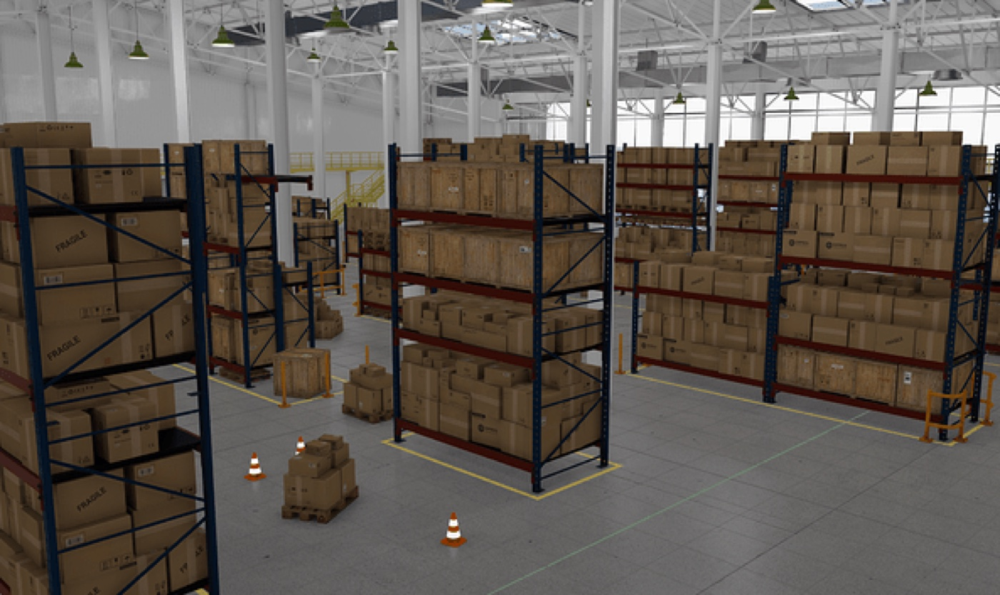

Independent Robotics Software Project · July 2026 – Present

A ROS 2-based warehouse robot simulation focused on autonomous navigation, task execution, robot health monitoring, and fleet telemetry.
The goal is to practice production-style robotics software patterns used where robots need to move reliably, report status, expose debugging data, and support fleet-level monitoring — inspired by real warehouse robotics problems like task assignment, structured-environment navigation, and telemetry pipelines for operations and debugging.
Warehouse Robot Simulation
↓
ROS 2 Navigation / Nav2
↓
Task Manager Node
↓
Robot Health Monitor
↓
Telemetry Publisher
↓
Fleet Dashboard / AWS Backend
What I'm Building
Current Progress
Planned Milestones
Repository
The roadmap, workspace, and progress live on GitHub.